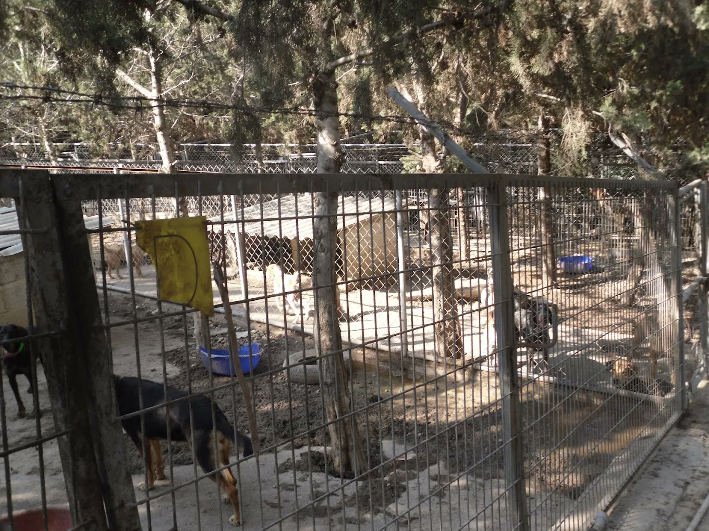
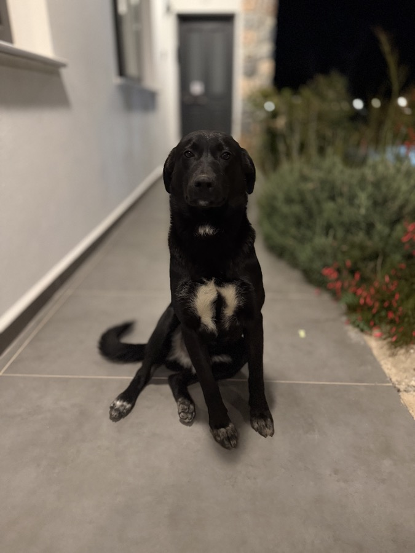
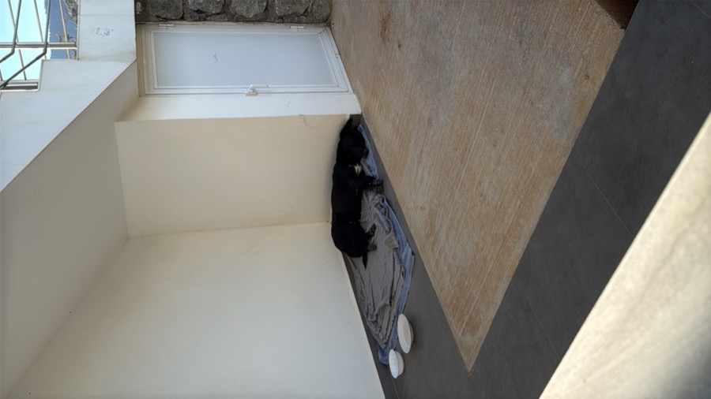
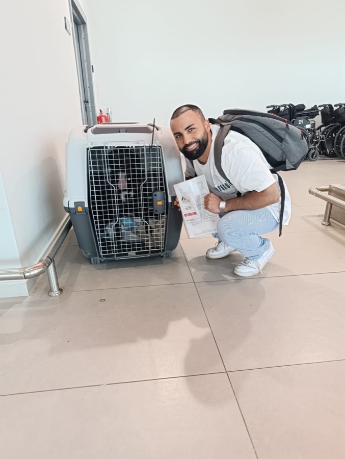
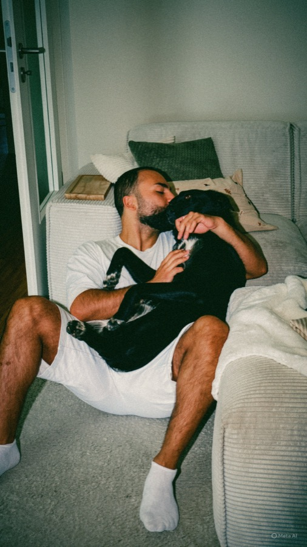

Rescue Organisations leisten täglich Außergewöhnliches. Und erhalten dafür kaum Unterstützung — nicht weil Menschen nicht helfen wollen, sondern weil sie schlicht nicht wissen, dass diese Organisationen existieren. Das ist kein Schicksal. Das ist ein lösbares Problem. Rescue organisations do extraordinary work every day. And receive far too little support for it — not because people don't want to help, but because they simply don't know these organisations exist. That's not fate. It's a solvable problem.
Keine SichtbarkeitNo visibility
Rescue Organisations haben kein Marketing-Budget und kein Team dafür. Also passiert — nichts. Potenzielle Unterstützer, Adoptanten und Spender wissen nicht, dass es sie gibt. Nicht weil die Arbeit fehlt, sondern weil niemand davon erzählt.Rescue organisations have no marketing budget and no team for it. So nothing happens. Potential supporters, adopters, and donors don't know they exist — not because the work isn't there, but because nobody's telling the story.
Kein Content, kein KanalNo content, no channel
Social Media ist heute der schnellste Weg, um Menschen zu erreichen und zu bewegen. Aber professionellen Content zu erstellen kostet Zeit, Geld und Know-how — alles Dinge, die Rescue Organisations nicht haben. Also bleibt der Kanal stumm. Und mit ihm die Geschichte, die eigentlich erzählt werden müsste.Social media is the fastest way to reach and move people today. But creating professional content takes time, money, and expertise — things rescue organisations simply don't have. So the channel stays silent. And with it: the story that deserves to be told.
Kein digitales FundamentNo digital foundation
Wer von einer Organisation hört und spenden oder adoptieren möchte, sucht zuerst deren Website. Findet er keine — oder eine, die unprofessionell wirkt — geht er wieder. Jede schlechte Website kostet diese Organisationen direkt Geld und Vertrauen.Someone who hears about an organisation and wants to donate or adopt will look for their website first. If they find nothing — or something that looks unprofessional — they leave. Every poor website costs these organisations money and trust.
Genau hier setzen wir an — mit einem Format, das alle drei Probleme gleichzeitig löst. Und dessen Wirkung weit über unseren Besuch hinausgeht. That's exactly where we come in — with a format that solves all three problems at once. And whose impact extends far beyond our visit.
Wir kommen, wir drehen, wir erzählen eure Geschichte.We come, we film, we tell your story.
Eine Woche lang sind wir wirklich dabei — nicht als Kamerateam, das seine Liste abarbeitet, sondern als Menschen, die verstehen wollen. Wir begleiten den Alltag im Shelter, lernen die Tiere kennen, hören den Menschen zu. Und irgendwo dazwischen entstehen die Momente, die man nicht planen kann — die echten. Das Ergebnis ist ein professionell produzierter Dokumentarfilm auf YouTube. Kein Spendenaufruf. Keine Werbung. Eine Geschichte, die bewegt — weil sie wahr ist.For a week, we're truly there — not as a camera crew working through a shot list, but as people who genuinely want to understand. We follow the shelter's everyday life, get to know the animals, listen to the people behind it all. And somewhere in between, the moments emerge that can't be planned — the real ones. The result: a professionally produced documentary on YouTube. Not a fundraiser video. Not an ad. A story that moves people — because it's true.
Was bleibt, wenn wir wieder weg sind.What stays long after we leave.
Nebenbei — aber alles andere als nebensächlich. Während der Dokumentarfilm entsteht, sammeln wir gleichzeitig Material, das einer Organisation Monate lang trägt: kurze Clips, Reels, Fotos — fertig für Instagram, Facebook und TikTok. Wir erarbeiten gemeinsam eine Strategie: Wer ist die Zielgruppe? Was wird gepostet, wann und warum? Wie baut man eine echte Community auf? Am Ende wissen sie nicht nur, wie es geht — sie haben es selbst erlebt. Für Organisationen, die es möchten, übernehmen wir danach auch die laufende Kanalbetreuung.As a side effect — but anything but secondary. While the documentary takes shape, we gather material that keeps giving for months: short clips, reels, photos — ready for Instagram, Facebook, and TikTok. Together we build a strategy: who is the audience, what gets posted, when and why, and how to grow a real community. By the end, they don't just know how it works — they've lived it. For organisations that want it, we can also take over ongoing channel management.
Das digitale Fundament, das Vertrauen schafft — und Spenden generiert.The digital foundation that builds trust — and generates donations.
Eine gute Website ist kein Luxus — sie ist Vertrauen. Wer von einer Organisation hört und spenden oder adoptieren möchte, sucht sie zuerst online. Findet er nichts, oder eine Seite, die Zweifel weckt, geht er wieder — leise, aber für immer. Wir bauen jeder Organisation ein digitales Zuhause, das hält: mit Spendensystem, einer Galerie der Tiere, die ein Zuhause suchen, und einer Geschichte, die Menschen wirklich bewegt. Alles so aufgebaut, dass die Organisation es langfristig selbst pflegen kann — ohne technisches Wissen, ohne externe Kosten.A good website isn't a luxury — it's trust. Someone who hears about an organisation and wants to donate or adopt will look them up online first. If they find nothing, or a page that raises doubts, they leave — quietly, but for good. We build each organisation a digital home that holds: a donation system, a gallery of animals waiting for a home, and a story that genuinely moves people. All built so the organisation can maintain it themselves long-term — no technical knowledge required, no ongoing costs.
Es war Elaine Powell, die mir half, Oreo von den Straßen Zyperns zu retten. Ohne mich zu kennen. Ohne etwas dafür zu erwarten. Weil das einfach ist, wer sie ist. It was Elaine Powell who helped me rescue Oreo from the streets of Cyprus. Without knowing me. Without expecting anything in return. Because that is simply who she is.
Als ich sie persönlich traf, fand ich sie allein: eine Person, über zweihundert Hunde, kaum Budget. Bei bis zu 45 Grad kann selbst Trinkwasser für die Tiere zur Krise werden.
Was Elaine leistet, verdient mehr als Bewunderung. Es verdient ein Publikum. Sie ist Episode 01 — und der Grund, warum es Rescue Stories gibt.
When I met her in person, I found her alone: one person, over two hundred dogs, barely any budget. At temperatures reaching 45°C, even drinking water can become a crisis.
What Elaine does deserves more than admiration. It deserves an audience. She is Episode 01 — and the reason Rescue Stories exists.

Bullsland Dogwear ist eine deutsche Premium-Hundemarke — mit über 50.000 Kunden und einer 4,9-Sterne-Bewertung. Als Pilot-Sponsor machen sie Episode 01 möglich: mit konkreter Unterstützung statt leerer Versprechen. Bullsland Dogwear is a German premium dog brand — with over 50,000 customers and a 4.9-star rating. As pilot sponsor, they make Episode 01 possible: with concrete support, not empty promises.
Shop besuchenVisit shopFlüge & UnterkunftFlights & accommodation
Bullsland übernimmt die Reisekosten für unser Team — Flüge und Unterkunft vor Ort. So entstehen für die Rescue Organisation keine Kosten durch uns.Bullsland covers the travel costs for our team — flights and accommodation on site. This means the rescue organisation incurs no costs through us.
Hundezubehör für die RescueDog accessories for the rescue
Zusätzlich stellt Bullsland Dogwear Hundezubehör zur Verfügung, das direkt an die Kyrenia Animal Rescue geht — ein konkreter Beitrag für die Tiere vor Ort.In addition, Bullsland Dogwear provides dog accessories that go directly to Kyrenia Animal Rescue — a tangible contribution for the animals on site.
Was darüber hinausgeht, gehört der RescueAnything beyond that goes to the rescue
Was über die Reisekosten hinausgeht, fließt vollständig an die Rescue Organisation — ohne Abzug, ohne Ausnahme.Anything beyond the travel costs goes entirely to the rescue organisation — no deductions, no exceptions.
Vier Monate, die mein Leben veränderten — und den Grundstein für dieses Projekt legten. Four months that changed my life — and laid the foundation for this project.

Er folgte mir tagelang durch die Straßen Zyperns.He followed me for days through the streets of Cyprus.

Eines Morgens schlief er vor meiner Tür. Da wusste ich es.One morning he slept at my door. That's when I knew.

Vier Monate später hielt ich seine Papiere in der Hand.Four months later, I was holding his documents.

Oreo ist angekommen. Und dieses Projekt hat begonnen.Oreo has arrived. And this project has begun.
Was mir bei all dem klar wurde: Elaine Powell und die Kyrenia Animal Rescue hatten mir geholfen, ohne mich zu kennen. Aber was mich wirklich traf, war das, was ich bei meinem persönlichen Besuch sah — eine Frau, allein, mit über zweihundert Hunden.
Diese Rescue Organisations tun außergewöhnliche Dinge — und kaum jemand weiß es. Kein Marketing, keine Website, keine Reichweite. Genau das wollen wir ändern.
What became clear through all of this: Elaine Powell and Kyrenia Animal Rescue had helped me without knowing me at all. But what really struck me was what I saw when I visited in person — one woman, alone, with over two hundred dogs.
These rescue organisations do extraordinary things — and almost nobody knows it. No marketing, no website, no reach. That is exactly what we want to change.
„Ich wollte das Problem nicht mit einer Spende lösen. Ich wollte es bei der Wurzel packen — und das ist Marketing." "I didn't want to solve this with a donation. I wanted to tackle it at the root — and that root is marketing."
Zwei Minuten, die zeigen, worum es geht: echte Geschichten, echte Emotionen — und was passiert, wenn man einfach hinfährt und anfängt zu filmen. Two minutes that show what this is about: real stories, real emotions — and what happens when you simply go there and start filming.
Ob als Sponsor, als Teil des Teams oder einfach durch deine Reichweite — du kannst einen echten Unterschied machen.Whether as a sponsor, as part of the team, or simply through your reach — you can make a real difference.
Sie wollen nicht nur Sichtbarkeit kaufen, sondern tatsächlich etwas bewegen — in einem Format, das Menschen wirklich erreicht? Dann sollten wir reden.You don't want to just buy visibility — you want to create real impact in a format that actually reaches people? Then let's talk.
Jetzt anfragenGet in touchDu bringst Skills in Video, Social Media oder Produktion mit — und willst sie für etwas einsetzen, das wirklich zählt? Meld dich.You have skills in video, social media, or production — and want to put them towards something that actually matters? Get in touch.
Jetzt meldenGet in touchFolge dem Projekt auf Social Media. Wenn Episode 01 erscheint, ist jede Weitergabe ein direkter Beitrag für Kyrenia Animal Rescue.Follow the project on social media. When Episode 01 drops, every share is a direct contribution to Kyrenia Animal Rescue.
FolgenFollow us